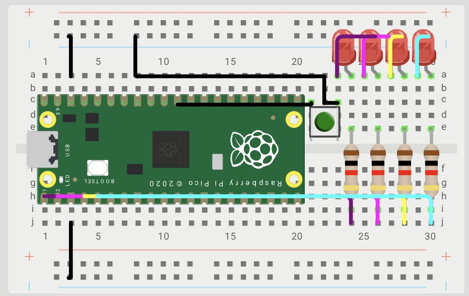

Session 1 — GPIO Control
Goal: Turn on the integrated LEDs as required in each exercise using masks and bitwise operations.
Prediction: It is expected that the LEDs can be controlled via GPIO to create different on/off sequences, using binary values and bit operations.
Set Up
A Raspberry Pi Pico 2W was used, connected to four LEDs via GPIO. Each LED has a current-limiting resistor connected to ground for protection. The four LEDs were used as a 4-bit representation.

Exercise 1. 4-bit binary counter
Using four LEDs, the binary representation from 0 to 15 must be displayed every second.
What I did
With the teacher's help, we learned here that instead of manually writing 0001, 0010, 0011, etc., you can let counter generate the numbers automatically in binary.
Evidence
Code
sio_hw->gpio_set = (counter);
sleep_ms(200);
sio_hw->gpio_clr = (0b1111<<0);
sleep_ms(200);
counter++;
Exercise 2 — Bouncing light
Using 4 LEDs the light advances 2 3 4 5 and then returns 4 3 2, repeating continuously
What I did
Here the professor helped us combine for loops plus bit shifting to control the LEDs in a much simpler way, without having to write each binary combination manually, and we used 1u << pos to shift the bit and select the corresponding LED in each position.
Evidence
Code
for(pos=0;pos<=3;pos++)
{ sio_hw->gpio_set = (1u<<pos);
sleep_ms(200);
sio_hw->gpio_clr = (1u<<pos);
sleep_ms(200);}
for(pos=3;pos>=0;pos--)
{ sio_hw->gpio_set = (1u<<pos);
sleep_ms(200);
sio_hw->gpio_clr = (1u<<pos);
sleep_ms(200);}
Exercise 3 — Fill and empty animation
What we did was a sequence where the LEDs turn on from right to left and then turn off from left to right.
What I did
Here we used different binary values as masks to select each LED, with gpio_set we made each new LED that turned on stay on along with the previous ones, while with gpio_clr we turned them off in reverse order.
Evidence
Code
sio_hw->gpio_set = 0b0001;
sleep_ms(200);
sio_hw->gpio_set = 0b0010;
sleep_ms(200);
sio_hw->gpio_set = 0b0100;
sleep_ms(200);
sio_hw->gpio_set = 0b1000;
sleep_ms(200);
sio_hw->gpio_clr = 0b1000;
sleep_ms(200);
sio_hw->gpio_clr = 0b0100;
sleep_ms(200);
sio_hw->gpio_clr = 0b0010;
sleep_ms(200);
sio_hw->gpio_clr = 0b0001;
sleep_ms(200);
Exercise 4 — Fill from the outside inward
The LEDs light up from the edges towards the center.
What I did
In this exercise, we used binary masks to control several LEDs simultaneously. 0b1001 selected the LEDs at the ends, and 0b0110 selected the LEDs in the center, gpio_set turned them on, and gpio_clr turned them off.
Evidence
Code
while (true) {
sio_hw->gpio_set = 0b1001;
sleep_ms(200);
sio_hw->gpio_set = 0b0110;
sleep_ms(200);
sio_hw->gpio_clr = 0b1001;
sleep_ms(200);
sio_hw->gpio_clr = 0b0110;
sleep_ms(200);
What went wrong
What went wrong in this exercise was our lack of knowledge, since we failed to study and pay attention in class, so the teacher had to help us, because we tried to extract the codes with the help of AI but it turned out that they were also poorly made.
Disclosure
- We learned and understood the logic behind the codes and how they relate to binary operations such as AND, OR, XOR, etc.
- We asked ChatGPT, but we realized their code was much longer than the code we created with the professor. Therefore, we need to pay much closer attention in class to avoid making that mistake again.